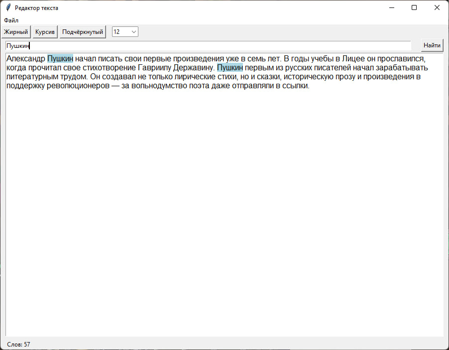
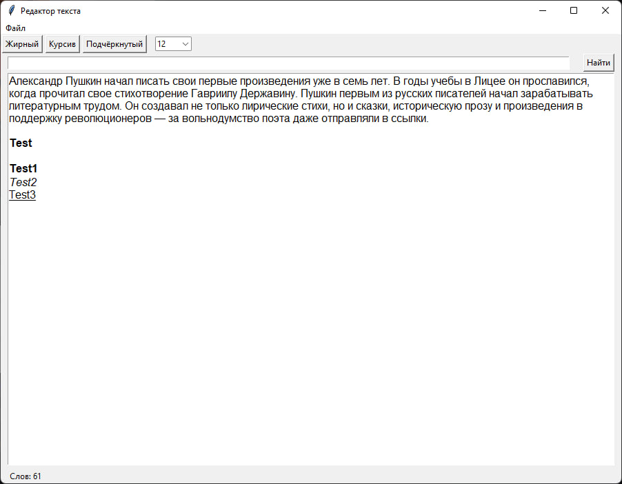
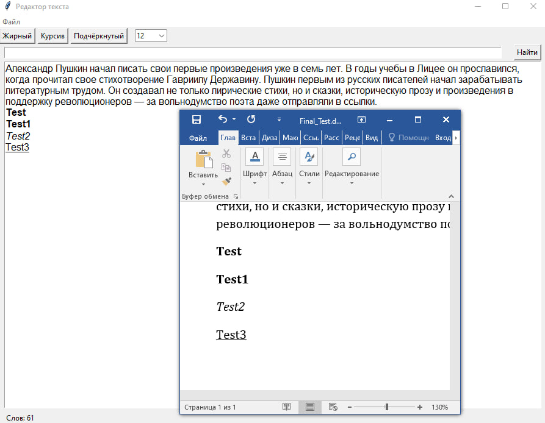

Описание проекта
Текстовый редактор на Python создан в рамках проектной практики и демонстрирует возможности языка Python и библиотеки Tkinter для создания GUI-приложений. Проект также использует библиотеку python-docx для экспорта в формат .docx.
Функциональность редактора:
- Открытие и сохранение файлов (.txt, .docx).
- Редактирование и форматирование текста (жирный, курсив, подчёркнутый).
- Поиск текста с подсветкой совпадений.
- Поддержка горячих клавиш (Ctrl+O, Ctrl+S, Ctrl+F, Ctrl+B, Ctrl+I, Ctrl+U).
- Выбор размера и шрифта текста.
- Счётчик количества слов в реальном времени.
Этапы разработки
- Создание главного окна приложения и конфигурация интерфейса.
- Добавление текстового поля и прокрутки.
- Разработка меню: открытие, сохранение, выход.
- Создание панели поиска и реализация подсветки найденных слов.
- Добавление функционала для жирного, курсивного и подчёркнутого текста с помощью тегов Tkinter.
- Сохранение форматированного текста в формате .docx с использованием python-docx.
- Реализация счётчика слов и управления шрифтом.
- Настройка горячих клавиш для основных действий.
Пример кода
Создание окна и меню:
root = tk.Tk()
root.title("Редактор текста")
root.geometry("800x600")Добавление текстового поля:
text_area = tk.Text(root, wrap='word')
text_area.pack(expand=1, fill='both')Поиск слова в тексте:
def find_text():
text_area.tag_remove('highlight', '1.0', tk.END)
search_word = search_entry.get()
if search_word:
start_pos = '1.0'
while True:
start_pos = text_area.search(search_word, start_pos, stopindex=tk.END)
if not start_pos:
break
end_pos = f"{start_pos}+{len(search_word)}c"
text_area.tag_add('highlight', start_pos, end_pos)
text_area.tag_config('highlight', background='lightblue')
start_pos = end_posПрименение форматирования (жирный текст):
def apply_bold():
try:
current_tags = text_area.tag_names("sel.first")
if "bold" in current_tags:
text_area.tag_remove("bold", "sel.first", "sel.last")
else:
text_area.tag_add("bold", "sel.first", "sel.last")
text_area.tag_config("bold", font=("Arial", font_size, "bold"))
except tk.TclError:
passПодсчёт количества слов:
def update_word_count():
content = text_area.get("1.0", "end-1c")
words = content.split()
word_count_label.config(text=f"Слов: {len(words)}")Использованные библиотеки
- Tkinter — библиотека стандартной поставки Python для GUI.
- python-docx — для сохранения и экспорта документов с форматированием.
Скриншоты



Ссылка на проект
Код проекта доступен на GitHub: